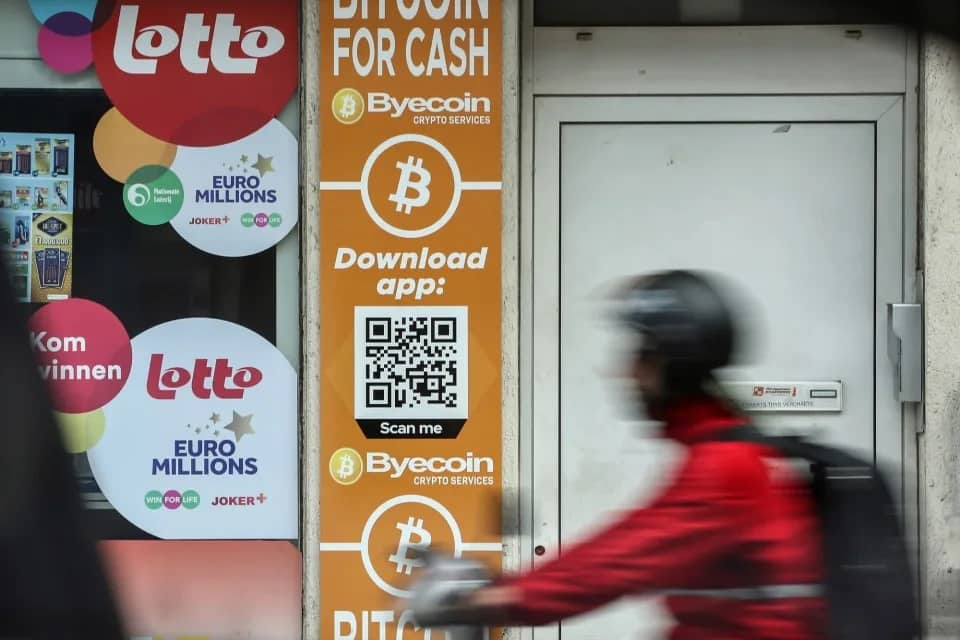

Bitcoin Hovers Around $20,000 as Hawkish Fed Weighs on Crypto
August 30, 2022
Bitcoin traded in a narrow band around $20,000, with investors less willing to take big risks after Federal Reserve Chair Jerome Powell reiterated the central bank’s commitment to keep raising rates in the fight against inflation.
The largest token rose as much as 2% on Monday to $20,412 after trading below that key round-number threshold over the weekend. Other cryptocurrenices were mixed. Equities -- which plunged on Friday in the wake of Powell’s remarks -- extended declines, with the Nasdaq Composite index shedding 0.7% as of 2:20 p.m. in New York.
“Money is flowing out of risky assets,” said Cici Lu, chief executive officer at consulting firm Venn Link Partners.
The $20,000 level acted as support for Bitcoin when it hit lows in recent months, but the cryptocurrency had worked its way higher in recent weeks. Before Saturday, it hadn’t been below that mark since July 14, and had even crossed above $25,000 earlier in August. That mini-rally was cut short as rate-hike concerns intensified, and Bitcoin has fallen some 17% since Aug. 15.